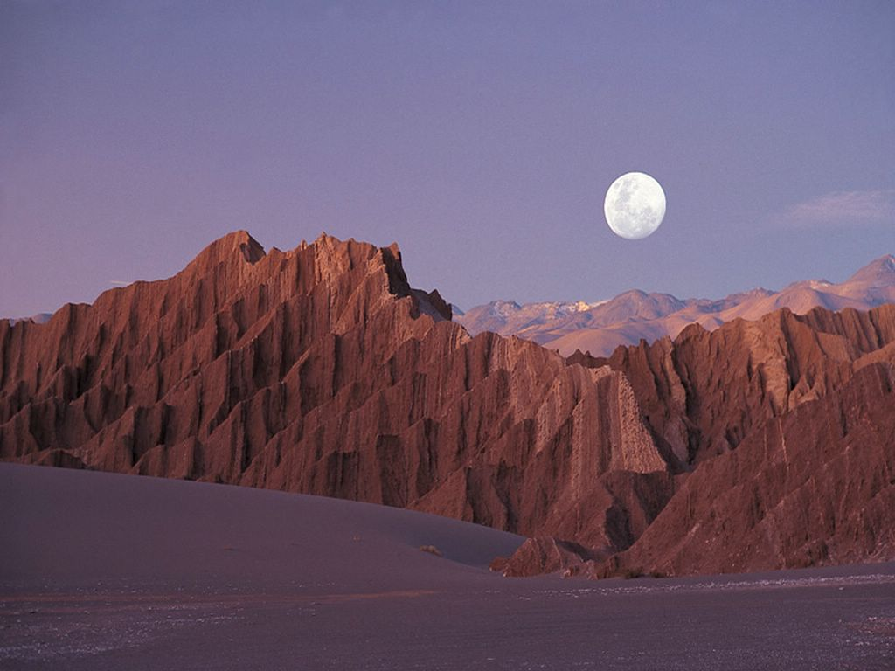

Desierto de Atacama
- Región: Antofagasta
- Comuna: San Pedro de Atacama
- Tipo de patrimonio: Natural (paisaje desértico)
- Fecha/año de declaración: Sector Valle de la Luna declarado Santuario de la Naturaleza en 1982
- Estado de conservación: Zona protegida (Santuario de la Naturaleza)
Considerado el desierto no polar más árido del planeta, destaca por paisajes únicos y cielos ideales para la observación astronómica.